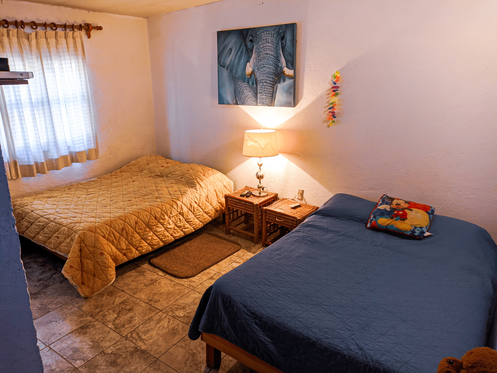
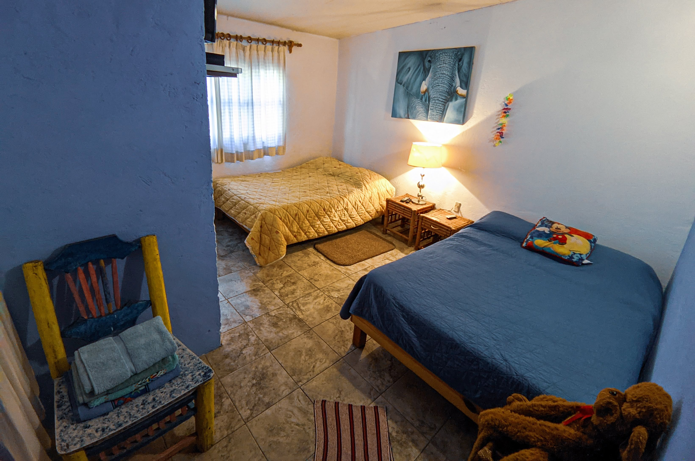
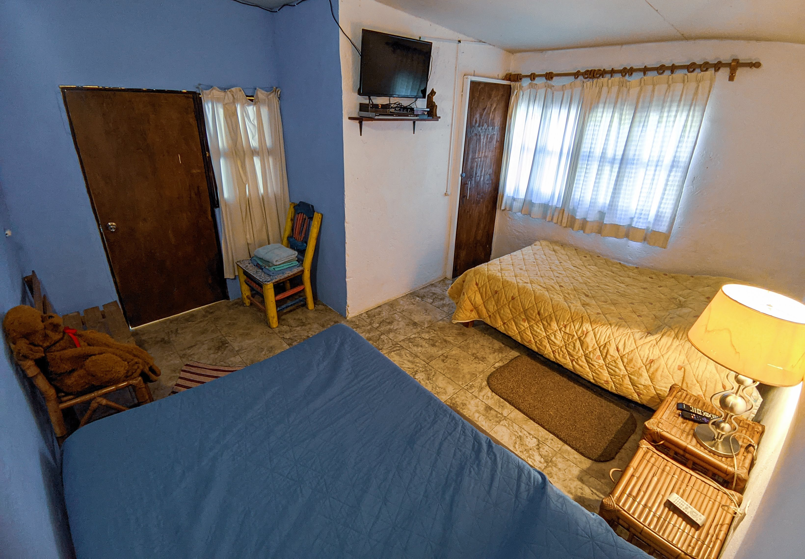
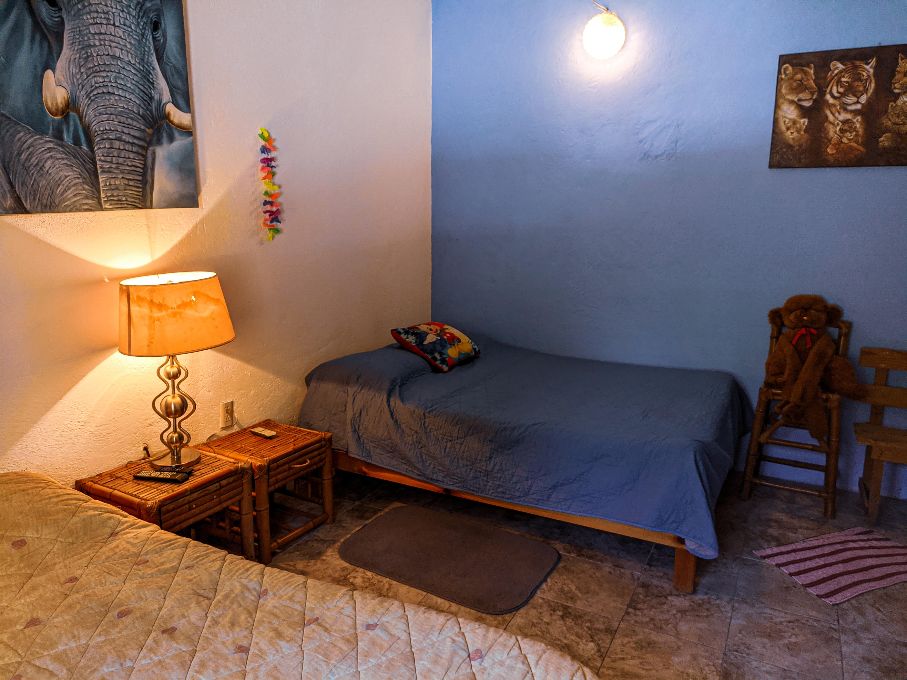

Ubicación: México, Tepoztlán Morelos.
Características del Departamento:
Segundo Piso:
Cupo máximo: 10 personas.






* Reducir volumen de la música después de las 20 hrs por acuerdos y normas de hospedajes y hoteles en
Tepoztlán y por respeto a los vecinos.
* Tapar alberca con cubierta azul térmica en la noche al finalizar su uso para mantener el calor del
agua.
* No mover o tratar de manipular el mecanismo de la alberca, llaves, calentadores, solares, mangueras,
estrictamente prohibido. ¡Se penalizará cualquier desperfecto ya que todo es automático!
* Prohibido estrictamente el consumo de drogas o sustancias prohibidas en el departamento "Casita
Colonial" o se te pedirá el desalojo sin devolución de efectivo de renta.
* El departamento "Casita Colonial" no se hace responsable de cualquier incidente, o en caso de robo,
pérdida, o extravío de pertenencias después de la entrega de llaves del departamento.
* A todas las familias que traen niños menores de edad a "Casita Colonial," los padres o familiares se
harán responsables de ellos para uso de la alberca y estancia en el departamento.
* Estrictamente prohibido meter mascotas a la alberca, subirlos a sillones y camas, y limpiar sus
heces.
* REGULARMENTE la salida y entrega de llaves es a las 13 hrs excepto cuando se les autorice horas
adicionales en caso de no tener reservación el mismo día de salida.
CUALQUIER DUDA O ACLARACIÓN RESPECTO A LA CASA O DEPARTAMENTO COMUNICARSE AL TELÉFONO 7771254813 Ο
7772108652 VÍA WHATSAPP.
DISFRUTA TU ESTANCIA EN FAMILIA O GRUPOS DE AMIGOS SANAMENTE EN "CASITA COLONIAL." RECUERDA, EL
DEPARTAMENTO ES DE AMBIENTE FAMILIAR (NO ES BAR NI ANTRO).